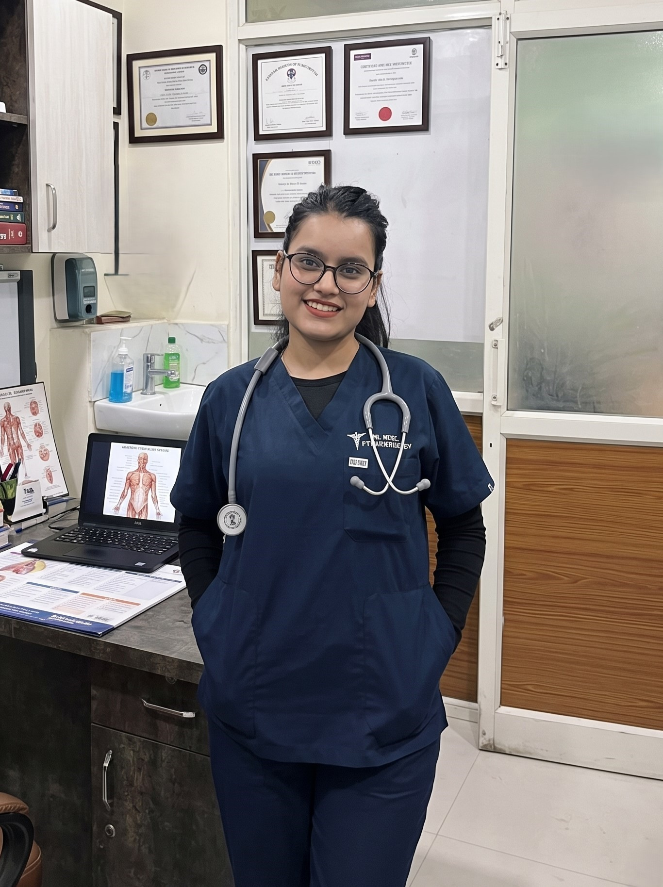
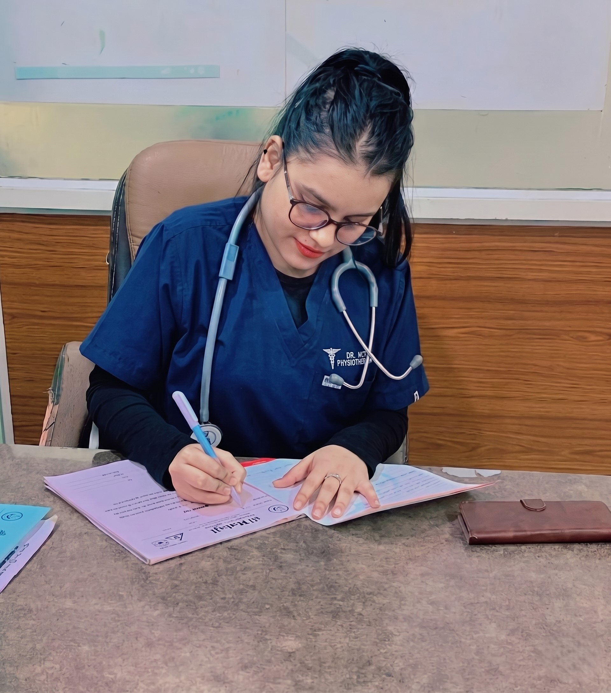
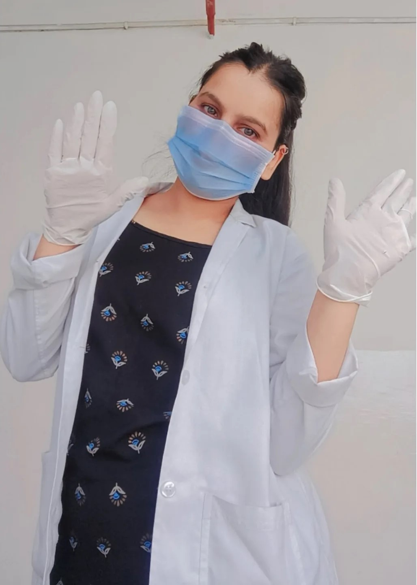

Dr. Babita Kemiya
Physiotherapy & RehabilitationPersonalised physiotherapy and rehabilitation in Bhopal by Dr. Babita Kemiya — combining advanced manual therapy, evidence-based techniques and compassionate care to help you live pain-free. Clinic visits and home appointments across Bhopal.

From spinal disorders to sports injuries — every treatment plan is uniquely designed for your body, your condition and your recovery goals. Serving patients across Bhopal at clinic and at home.
Targeted spinal therapy combining traction, manual mobilisation and core strengthening to relieve nerve compression.
Gentle neck mobilisation, postural correction and electrotherapy to ease radiating pain and stiffness.
McKenzie protocol, nerve gliding exercises and TENS therapy to calm sciatic nerve irritation.
Facial muscle re-education, electrical stimulation and PNF techniques for full functional recovery.
Progressive stretching, splinting and soft-tissue mobilisation to restore range of motion.
Heel pain relief through ultrasound therapy, taping, fascia release and bespoke exercise plans.
Eccentric loading, deep tissue release and Cyriax technique for lateral epicondylitis recovery.
Joint preservation programs, low-impact strengthening and pain-management modalities.
NDT/Bobath approach, gait training and family-centred home programs for paediatric patients.
Comprehensive evaluation followed by manual therapy, dry needling and progressive loading.
Knee, hip & shoulder OA management with pain modulation, mobility and functional training.
Early neuro-rehabilitation with motor relearning, balance training and functional recovery protocols.
Pre & post-surgical knee rehab — strengthening, proprioception and sport-specific return-to-play training.
RICE protocol, manual mobilisation, balance retraining and progressive loading to prevent recurrence.
Capsular stretching, joint mobilisation and graded exercises to restore full shoulder mobility.
Targeted scapular stabilisation, eccentric strengthening and pain modulation for shoulder recovery.
Nerve gliding, splinting, ergonomic correction and median nerve mobilisation for wrist & hand relief.
Don't have to leave your home — receive professional physiotherapy in the comfort of your own space.
Book a home visit

"Movement is medicine — every patient deserves a path back to their best life."
— Dr. Babita KemiyaA dedicated physiotherapist in Bhopal with a Bachelor of Physiotherapy (BPT) and a passion for restoring quality of life through evidence-based, patient-first care.
With expertise spanning orthopaedic, neurological, paediatric and geriatric physiotherapy, Dr. Babita has helped hundreds of patients across Bhopal overcome chronic pain, regain mobility and rebuild strength. Her approach blends modern manual therapy techniques with personalised rehabilitation plans — making every session purposeful and progressive. Clinic appointments and home visits available throughout Bhopal, including MP Nagar, Arera Colony, Kolar, Hoshangabad Road and surrounding areas.
Recovery begins with the right plan. Here's how we work together.
A thorough physical examination and history review to understand your condition completely.
Personalised treatment roadmap aligned with your goals, lifestyle and medical history.
Hands-on therapy, exercises and modalities delivered with care — at clinic or your home.
Progress tracking, education and home programs to keep you pain-free for the long term.
Hear from patients who reclaimed their lives through dedicated care.
"After months of debilitating sciatica pain, Dr. Babita's approach was a complete game-changer. Within weeks I was walking pain-free. Her dedication is unmatched."
"My mother couldn't walk after her stroke. Dr. Babita's home visits and patient guidance restored her independence. We're forever grateful."
"Tennis elbow had me sidelined for 6 months. Dr. Babita's targeted therapy got me back on the court in weeks. Highly recommended for any sports injury."
Ready to take the first step? Reach out for a consultation in Bhopal — clinic visits and home appointments both available across the city.